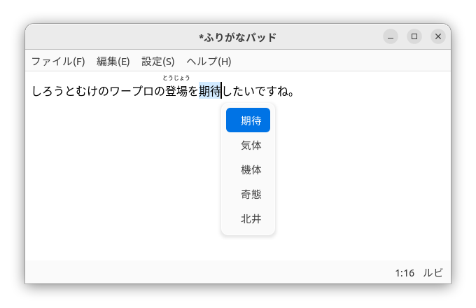

つかいかた

入力モード
「ひらがなIME」には、３つの入力モードがあります。 現在の入力モードは、画面うえがわのトップバーのなかに表示されます。 ふだんよくつかうのは、「ひらがなモード」と「英数モード」です。
| 入力モードの表示 | モードのなまえ | 解説 |
|---|---|---|
| あ | ひらがなモード | ひらがなを入力するモードです。 ※ かな漢字まじり文を入力するときは、このモードにします。 |
| A | 英数モード | アルファベットや数字を入力するモードです。 |
| ア | カタカナ モード | ちょくせつカタカナを入力するモードです。 |
漢語やカタカナのことばの入力
たとえば、「しろうとむけのワープロの登場を期待したいですね。」という文を入力するには、つぎのようにキーボードをうちます。
しろうとむけのわーぷろ〔変換〕のとうじょう〔変換〕をきたい〔変換〕したいですね。
漢字やカタカナの部分は、まずはひらがなで入力します。 そのあとで、〔変換〕キーをおせば、漢字やカタカナにおきかえることができます。
※ 漢字やカタカナにするときは、カーソルがその部分のまうしろにないといけません。
おくりがなつきの変換
動詞や形容詞など、活用する和語を漢字で入力したいときは、おくりがなをおくる位置を指定して変換します。 おくりがなをおくる位置は、水平バー「―」を入力して指定します。 水平バー「―」は、左〔Shift〕キーを単独でおすと入力できます。
例)
- おく―〔変換〕 → 送，贈，後，遅
- おく―る〔変換〕 → 送る，贈る
この例のように、活用することばは、おくりがなをふくめて変換すると、漢字の候補をしぼることができます。
よみの短縮
「ひらがなIME」は、ひらがなを漢字やカタカナに変換するとき、はじめは、よみのながい単語を優先するようになっています。 そのため、「生きがい論」と入力したいときに、
生きがいろん〔変換〕
とタイプすると、よみとして「がいろん」がえらばれて、
生き概論
のようになります。 このようなばあいは、よみをみじかくするようにします。 よみは、〔Tab〕キーをおすとみじかくできます。
じっさいに〔Tab〕キーをおすと、よみが「いろん」に短縮されて、
生きが異論
にかわります。さらに、もういちど、〔Tab〕キーをおすと、よみが「ろん」に短縮されて、
生きがい論
と目的の「生きがい論」を入力できます。
※ よみの短縮も辞書の学習結果とおなじように保存されます。